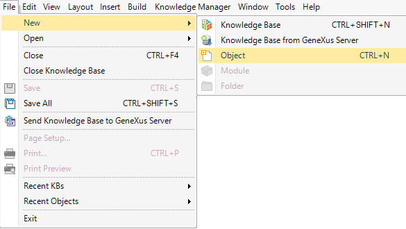
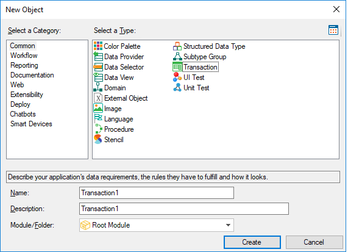

You can create a new object by selecting File > New > Object in the GeneXus main menu:  Shortcuts
 Note that the objects are grouped by categories. So, as you select a category, you will see other types of objects to create. Regardless of the type of object you are creating, you will be asked to enter the following:
The Significant Object Name Length Property determines the valid length name. Note that the name cannot contain blank spaces. Names may be made up of alphabetic, numeric, and underscore '_' characters, starting with an alphabetic character.
This description will be used later, for example, as the title or as a description in menus to execute the object.
|